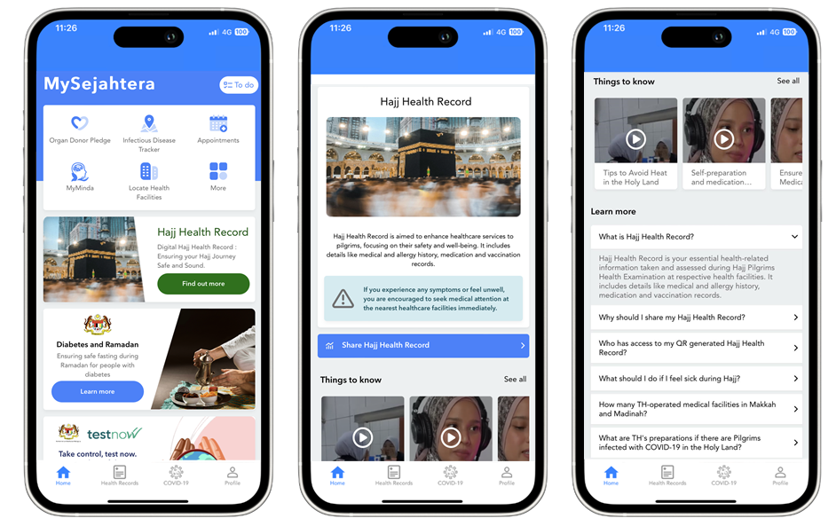
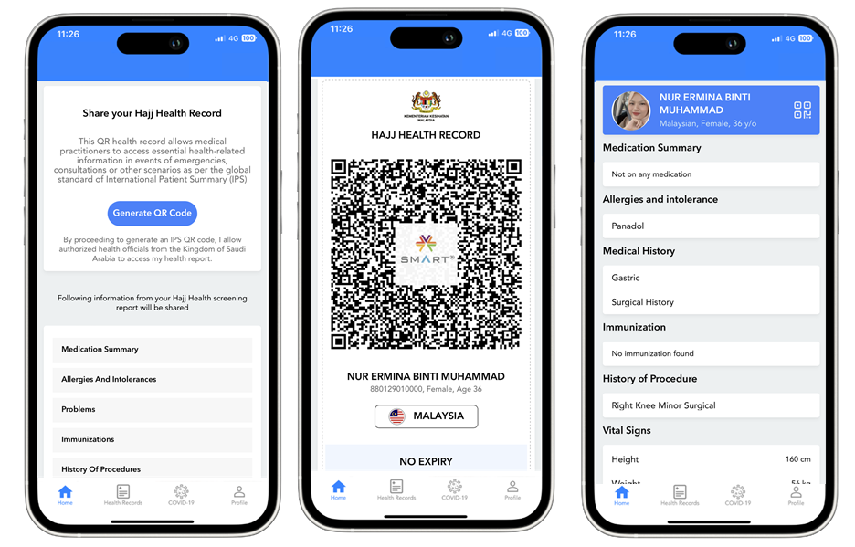

SMART Verifiable IPS for Pilgrimage
2.0.2 - release
SMART Verifiable IPS for Pilgrimage
2.0.2 - release
This page is part of the SMART Verifiable IPS for Pilgrimage (v2.0.2: Release) based on FHIR (HL7® FHIR® Standard) R4. The current version which supersedes this version is 2.0.3. For a full list of available versions, see the Directory of published versions
Issuing Country: Malaysia
Issuing Application: MySejahtera
Receiving Country: Kingdom of Saudi Arabia
Receiving Application: Care Ware (EMR)
The primary objective of this implementation is to enable Malaysian pilgrims traveling to Saudi Arabia for this year’s Hajj to carry their health records on the MySejahtera app as a Smart Health Certificate QR on the Global Digital Health Certification Network (GDHCN). In the event of an unexpected medical episode, healthcare professionals in Saudi Arabia can scan the QR code, access the medical history, and treat the patients appropriately.
This project in Malaysia is a collaborative effort by the Ministry of Health (MOH), Malaysia, and Tabung Haji (TH). The aim is to ensure that Malaysian Hajj pilgrims have seamless access to their health records during their pilgrimage, providing peace of mind and better healthcare support during their stay in Saudi Arabia.
The health records in this implementation are based on the Hajj Pilgrims Health Examination program conducted for Malaysian Hajj pilgrims. These examinations are conducted by the MOH health facilities and empanelled private general practitioners (GPs) by Tabung Haji across Malaysia.
The Hajj Health Examination is a comprehensive medical check-up conducted for Malaysian Hajj pilgrims. This examination is a mandatory requirement to ensure that pilgrims are fit for the journey and to identify any underlying health conditions that need to be managed during the Hajj. The examination includes general health assessments, vaccinations, and screenings for infectious diseases. The data from these examinations are recorded in a FHIR compliant electronic medical record (EMR) system called MyVAS and made accessible to pilgrims instantaneously through the MySejahtera app.
Standard Passcode and No Time Validity:
For Issuance (Malaysia using MySejahtera):
Obtain Consent:
a. Users provide consent to generate the Health Certificate QR code.
b. Consent details are stored, including acceptance to share health records as IPS on GDHCN to KSA officials
Set Passcode:
a. A standard passcode is set for all Malaysian IPS for this year’s Hajj
b. No user input required
Generate Smart Health Link (VHL):
a. VHL is created as a manifest URL based on user preferences and supports JSON and PDF content types.
Embed VHL into HCert:
a. VHL is embedded into a Health Certificate (HCert) following WHO's smart trust specification.
Prepare COSE Message:
a. HCert is inserted into the COSE message, signed with GDHCN key, and the Key ID (KID) is added to the header.
Generate CWT:
a. COSE message is wrapped into a CBOR Web Token (CWT).
Serialize CWT and Generate QR Code:
a. CWT is base64 encoded and converted into a QR code
For Receiving (Saudi Arabia using Care Ware):
Scan and Decode QR Code:
a. QR code is scanned and the base64 encoded CWT is obtained.
Extract COSE Message and Verify Signature:
a. COSE message is extracted from the CWT. b. COSE signature is verified using Malaysia’s public key from the GDHCN public registry. Malaysia’s country code is “MY”
Decode HCert and Extract VHL:
a. HCert is decoded from base64. b. VHL JSON is extracted from the HCert payload.
Retrieve and Decode VHL Manifest:
a. POST request is sent to the VHL manifest URL to retrieve the base64 encoded VHL manifest JSON. b. VHL manifest JSON is decoded from base64.
Retrieve IPS:
a. GET request is made for the IPS in the preferred file type (PDF). b. IPS JSON file is decrypted using the encryption key from the HCert response.
Download and Save IPS:
a. IPS PDF file is downloaded and saved for further use by healthcare workers.
MySejahtera is the national public health app of Malaysia, developed and managed by the Ministry of Health (MOH), Malaysia. It was initially developed to manage the COVID-19 outbreak, allowing users to perform health self-assessments, monitor their health status, and receive updates and information related to COVID-19.
Now, MySejahtera serves as the digital front door for accessing public healthcare services. MySejahtera has digitalized several national health programs like National Immunization Program (NIP) for children, the National Health Screening Initiative(NHSI), Self-Assessment tools for mental health, covering areas such as anxiety, depression, and suicidal thoughts.
The Ministry of Health Malaysia (MOH) is the government ministry responsible for the health system in Malaysia. MOH is dedicated to improving the health of the population through comprehensive health services, promotion of health awareness, and ensuring access to quality healthcare. The ministry plays a crucial role in implementing health policies, conducting health examinations, and collaborating on international health initiatives.
Tabung Haji is the Malaysian Hajj Pilgrims Fund Board, a government-linked financial institution that manages the savings of Muslims in Malaysia intending to perform the Hajj pilgrimage. It provides comprehensive services to pilgrims, including savings schemes, training, logistics, and healthcare services during the Hajj. Tabung Haji works closely with MOH to ensure the well-being of pilgrims, particularly in health-related matters.
This implementation guide provides detailed steps and considerations for rolling out the Smart Health Certificate QR system for Malaysian Hajj pilgrims. By leveraging the MySejahtera app, the Ministry of Health Malaysia, and Tabung Haji, this initiative aims to enhance the healthcare experience for pilgrims in Saudi Arabia. The use of standardized health records and QR codes ensures that healthcare providers can quickly access essential medical information, facilitating timely and effective medical care during the Hajj.
This expanded guide should provide a thorough understanding of the project, its stakeholders, and the technical steps involved, making it easier for all parties to implement and utilize the system effectively.
Card on the home page, FAQ/Awareness on the pilgrimage

<\br> Consent, Generating QR and previewing the IPS
